Plotting Designs
The functions check_design() and
sim_design() will automatically create plots of your design
(unless you set plot = FALSE) so you can check you set it
up correctly. You can also use the plot_design() function
to plot a saved design list.
One-factor designs
p1 <- check_design(plot = FALSE) %>% plot_design()
p2 <- check_design(2, plot = FALSE) %>% plot_design()
p3 <- check_design(3, plot = FALSE) %>% plot_design()
p4 <- check_design(4, plot = FALSE) %>% plot_design()
p5 <- check_design(5, plot = FALSE) %>% plot_design()
p6 <- check_design(6, plot = FALSE) %>% plot_design()
cowplot::plot_grid(p1, p2, p3, p4, p5, p6, nrow = 2)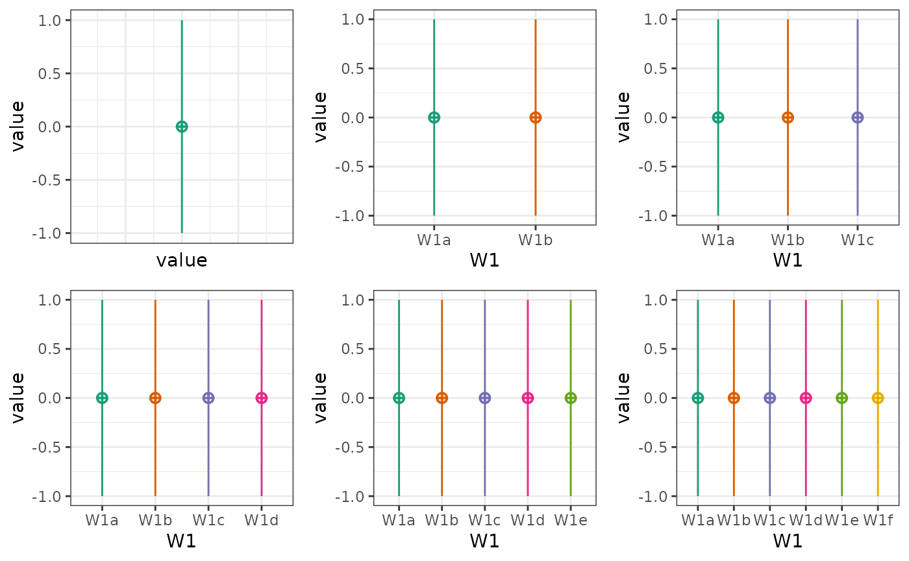
Two-factor designs
p1 <- check_design(c(2,2), mu = 1:4, plot = FALSE) %>% plot_design()
p2 <- check_design(c(2,3), mu = 1:6, plot = FALSE) %>% plot_design()
p3 <- check_design(c(2,4), mu = 1:8, plot = FALSE) %>% plot_design()
p4 <- check_design(c(3,2), mu = 1:6, plot = FALSE) %>% plot_design()
p5 <- check_design(c(3,3), mu = 1:9, plot = FALSE) %>% plot_design()
p6 <- check_design(c(3,4), mu = 1:12, plot = FALSE) %>% plot_design()
cowplot::plot_grid(p1, p2, p3, p4, p5, p6, nrow = 3)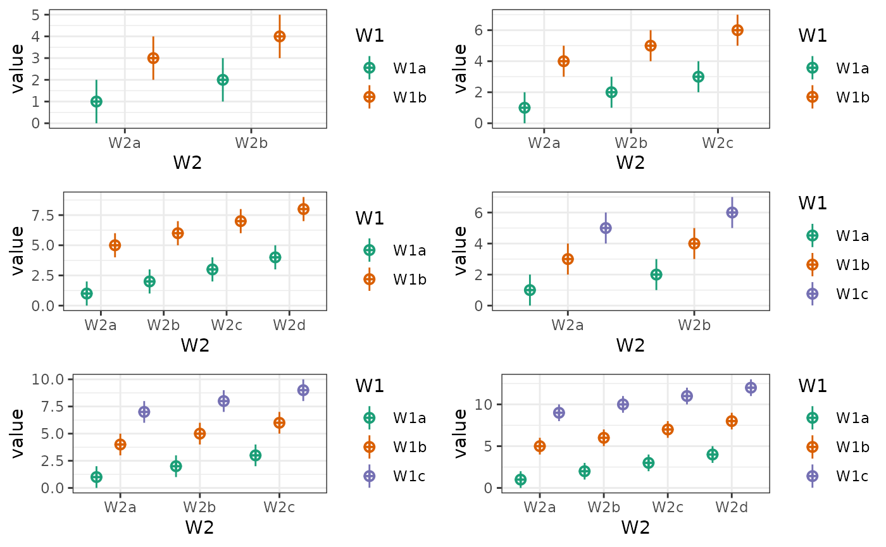
Plotting Data
You can plot data created with faux using plot_design(),
too. It will return a ggplot with a violin-boxplot by default.
One-factor data
data <- sim_design(2, 2, n = 20, mu = 1:4, plot = FALSE)
plot_design(data)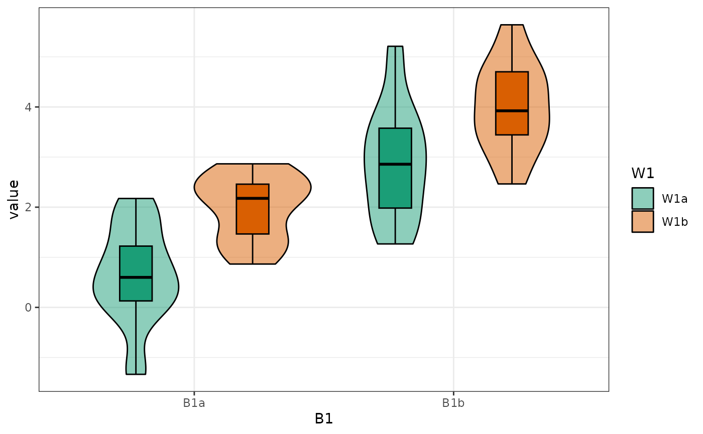
plot_design(data, geoms = "violin")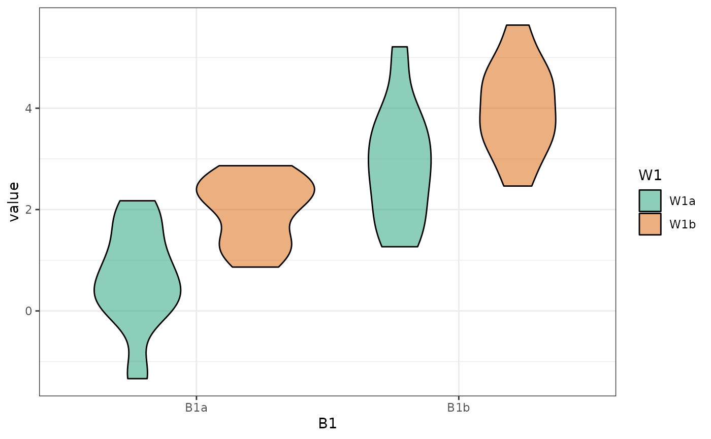
plot_design(data, geoms = "box")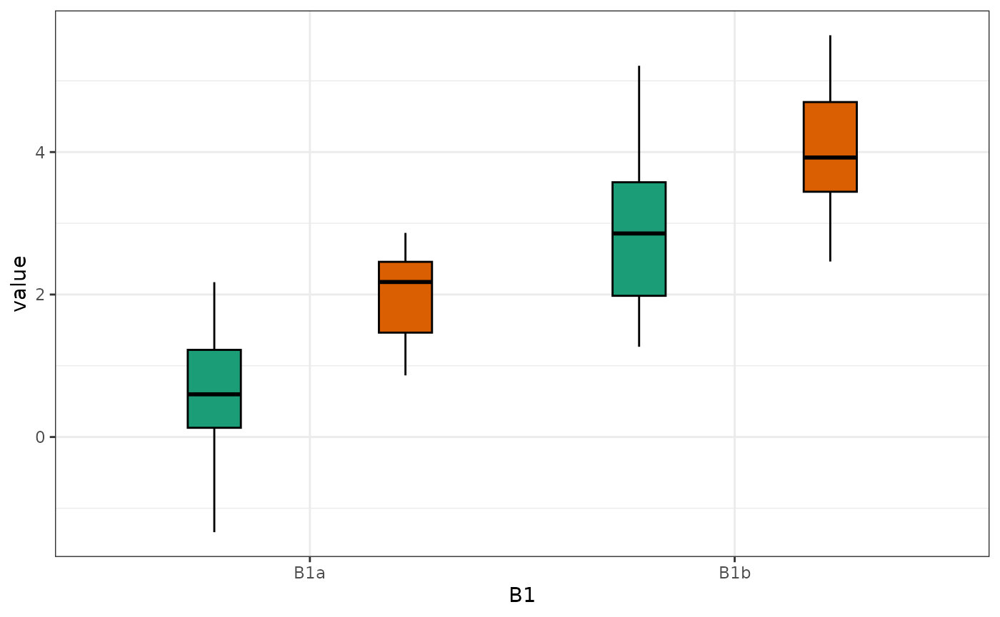
plot_design(data, geoms = "pointrangeSD")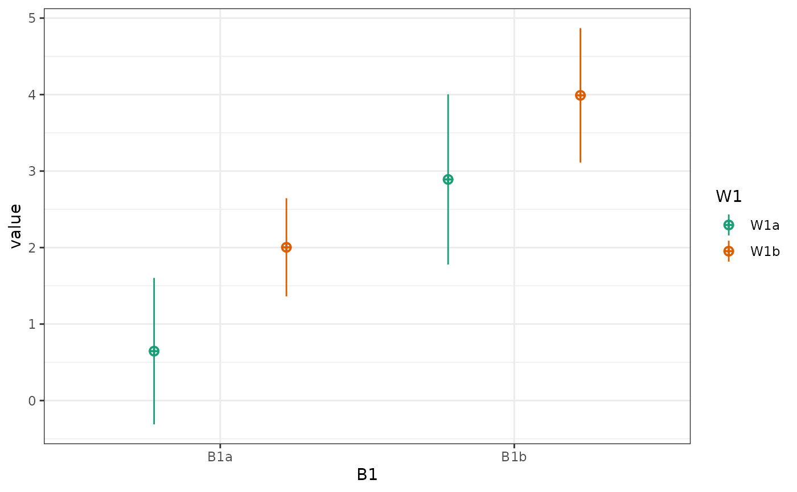
plot_design(data, geoms = c("violin", "pointrangeSE"))
plot_design(data, geoms = c("violin", "jitter"))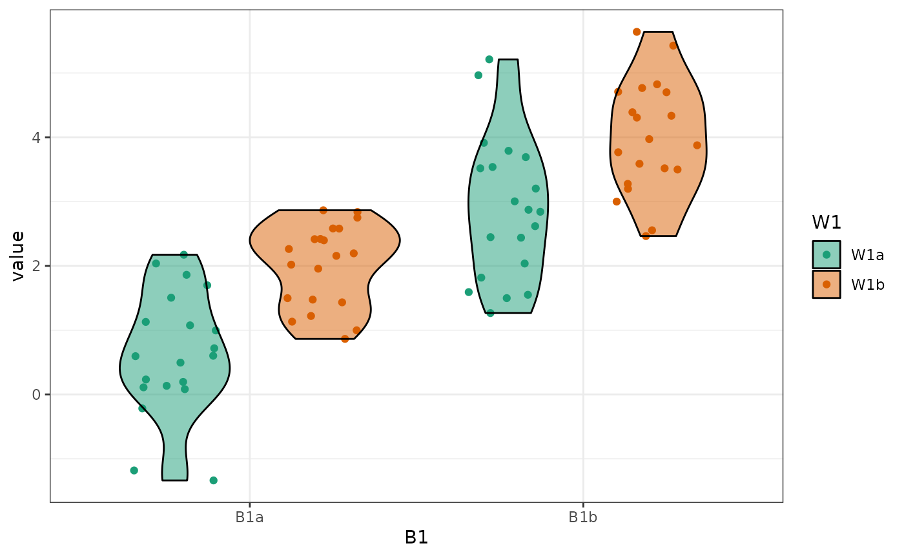
Palettes
You can change the default brewer palette from “Dark2” to any of the
options (see ?ggplot2::scale_colour_brewer for the
options).
data <- sim_design(5, n = 20, mu = 1:5, plot = FALSE)
cowplot::plot_grid(
plot_design(data, palette = "Purples") + ggtitle("Purples"),
plot_design(data, palette = "Pastel2") + ggtitle("Pastel2"),
plot_design(data, palette = "Spectral") + ggtitle("Spectral"),
nrow = 1
)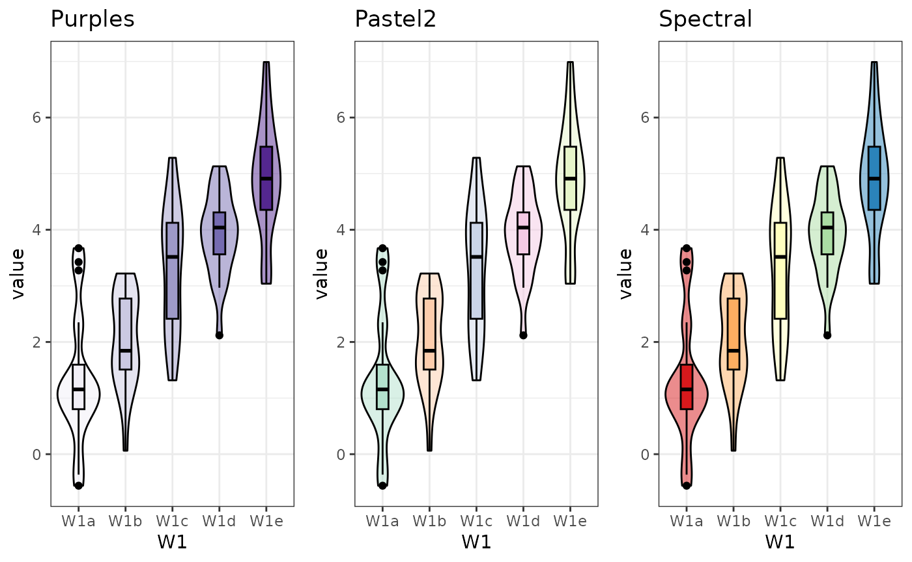
You can also add a non-brewer palette (or any other ggplot function).
You will get a message about a duplicate scale, but you can suppress
this with suppressMessages() or in the r chunk.
plot_design(data) +
scale_fill_viridis_d() +
theme_classic() +
xlab("") +
ggtitle("Plot with viridis fill and classic theme")
#> Scale for fill is already present.
#> Adding another scale for fill, which will replace the existing scale.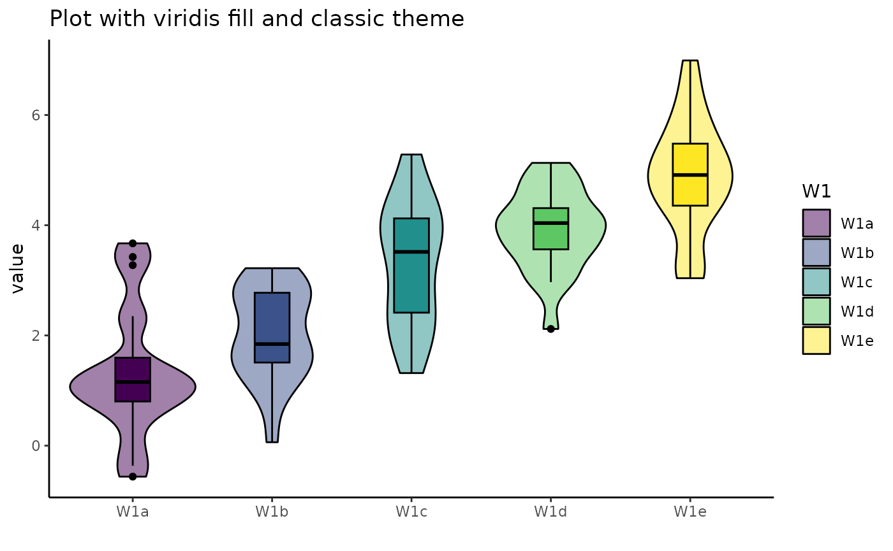
Change order of factors
List the factors you want to show in the order of fill/colour, x-axis, facet row(s), facet column(s).
data <- sim_design(c(2,2,2), n = 50, mu = 1:8, sd = 16, plot = FALSE)
abc <- plot_design(data, "W1", "W2", "W3", geoms = "violin")
acb <- plot_design(data, "W1", "W3", "W2", geoms = "violin")
bac <- plot_design(data, "W2", "W1", "W3", geoms = "violin")
bca <- plot_design(data, "W2", "W3", "W1", geoms = "violin")
cab <- plot_design(data, "W3", "W1", "W2", geoms = "violin")
cba <- plot_design(data, "W3", "W2", "W1", geoms = "violin")
cowplot::plot_grid(abc, acb, bac, bca, cab, cba, nrow = 3,
labels = c("123", "132", "213", "231", "312", "321"))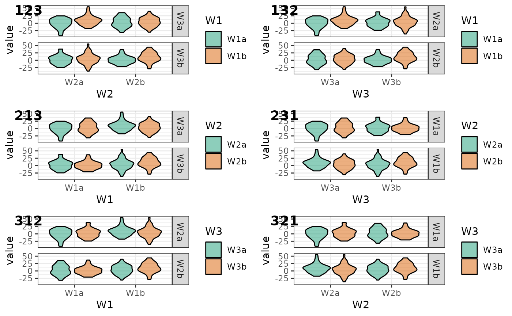
You can also plot a subset of the factors.
# main effects, no interactions
intercept <- 0
effect_code <- list(a = -.5, b = .5)
W1 <- lapply(effect_code, `*`, 2)
W2 <- lapply(effect_code, `*`, -1)
W3 <- lapply(effect_code, `*`, 0)
mu <- list(W1a_W2a_W3a = intercept + W1$a + W2$a + W3$a,
W1b_W2a_W3a = intercept + W1$b + W2$a + W3$a,
W1a_W2b_W3a = intercept + W1$a + W2$b + W3$a,
W1b_W2b_W3a = intercept + W1$b + W2$b + W3$a,
W1a_W2a_W3b = intercept + W1$a + W2$a + W3$b,
W1b_W2a_W3b = intercept + W1$b + W2$a + W3$b,
W1a_W2b_W3b = intercept + W1$a + W2$b + W3$b,
W1b_W2b_W3b = intercept + W1$b + W2$b + W3$b)
data <- sim_design(c(2,2,2), n = 50, mu = mu, sd = 2, plot = FALSE)
# make plots
geoms <- c("pointrangeSD")
W1 <- plot_design(data, "W1", geoms = geoms) + ggtitle("W1")
W2 <- plot_design(data, "W2", geoms = geoms) + ggtitle("W2")
W3 <- plot_design(data, "W3", geoms = geoms) + ggtitle("W3")
W12 <- plot_design(data, "W1", "W2", geoms = geoms) + ggtitle("W1 & W2")
W13 <- plot_design(data, "W1", "W3", geoms = geoms) + ggtitle("W1 & W3")
W23 <- plot_design(data, "W2", "W3", geoms = geoms) + ggtitle("W2 & W3")
cowplot::plot_grid(W1, W2, W3, W12, W13, W23, nrow = 2)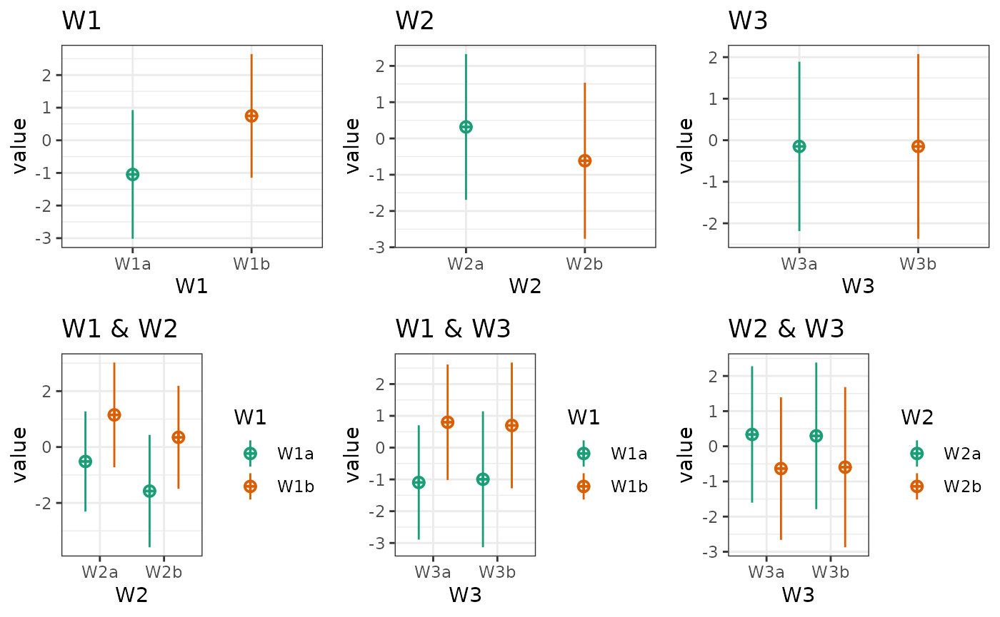
Facet Labels
Set the labeller to “label_both” if you want facets to include the factor label.
within <- list(
pet = c(cat = "Cats", dog = "Dogs"),
time = c(am = "Morning", pm = "Night"),
grp = c(ctl = "Control", exp = "Experimental"),
dose = 1:5
)
factor_labels <- list(pet = "Type of Pet",
time = "Time of Day",
grp = "Group",
dose = "Treatment Dose")
sim_design(within, vardesc = factor_labels,
mu = 1:40, sd = 5, plot = FALSE) %>%
plot_design("dose", "pet", "time", "grp", labeller = "label_both", palette = "Spectral")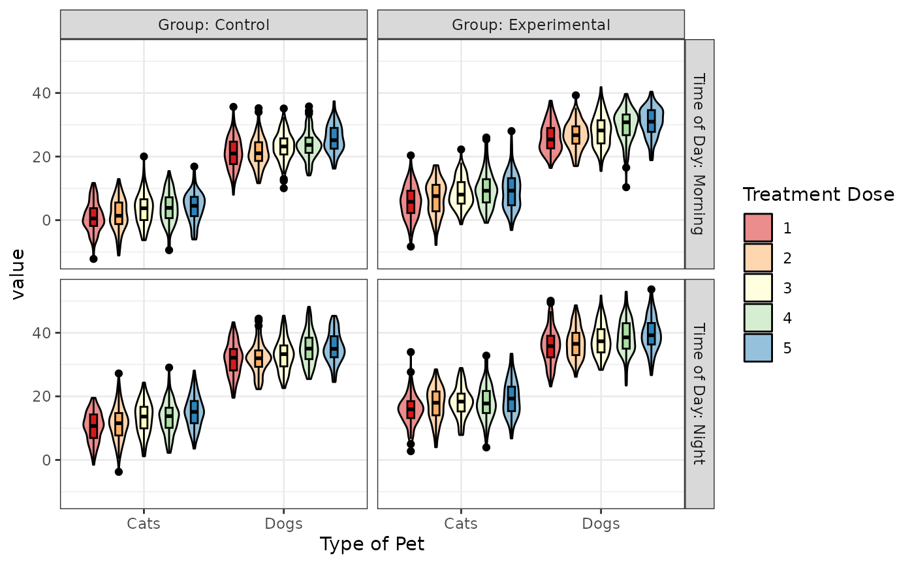